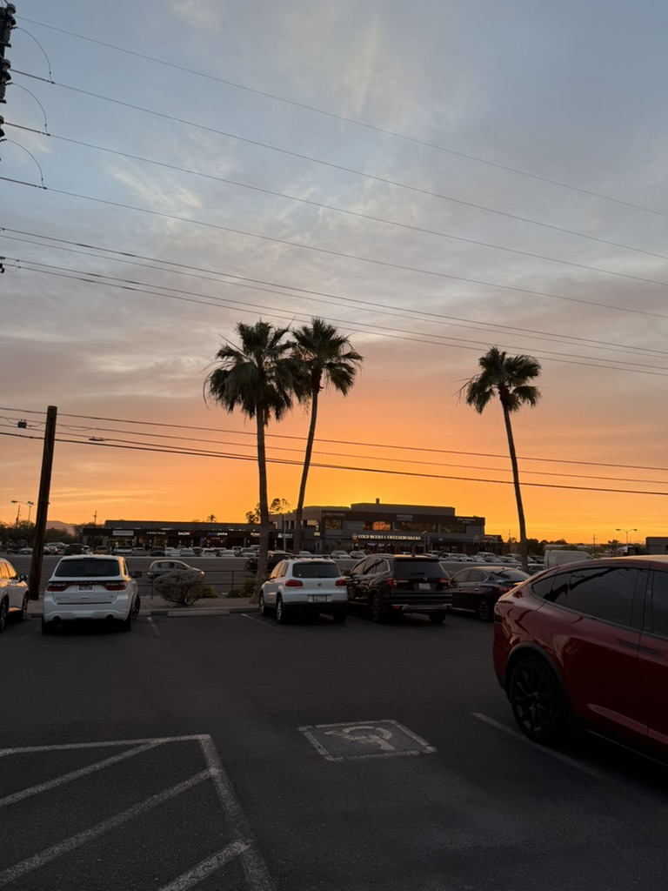
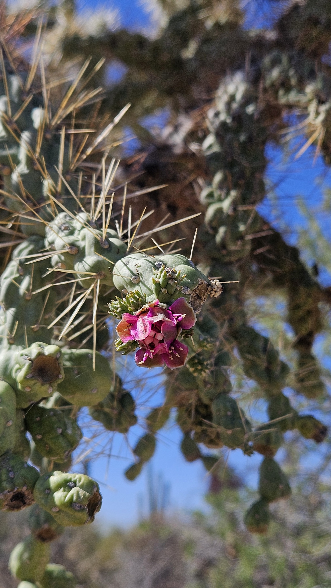
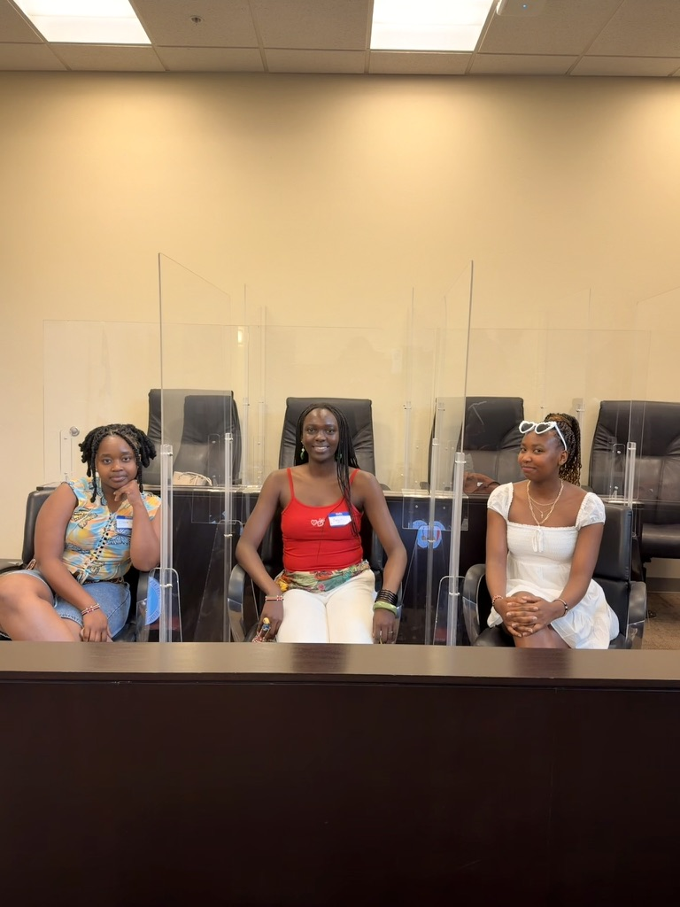
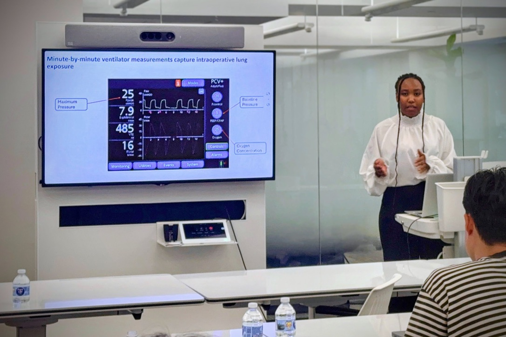

Here's a summary of how I spent my summer 2026.
| Place | Description | Time |
|---|---|---|
| Arizona | Global Flex Program | May 18-26 |
| New York City | QSURE Internship at MSKCC | June 1 - Aug 8 |
| Nairobi, Kenya | Visiting home | Aug 10 - Aug 25 |
At the beginning of Summer 2026, from May 18-26, I traveled to Arizona as part of a Global FLEX program. We spent most of our time in the southwestern part of the state, learning about environmental issues in the region and the Native American communities that have lived there for generations. What made the experience especially interesting was getting to learn outside of a traditional classroom. We visited reservations, spent time with members of different Indigenous communities, and learned directly from them about their cultures, histories, and relationships with the land. Our trip also took us to Phoenix and Arizona State University, where we spoke with professors and other experts about water resources and other environmental challenges facing the region. Being able to explore Arizona while learning directly from the people and places we were studying made the trip both educational and eye-opening.
Here are some of my favorite moments captured on camera:
I captured this sunset on our first day in Arizona. It was one of the most beautiful sunsets I had seen in months, especially after coming out of winter and spring on the East Coast.

I captured this when we visited a saguaro harvesting site and learned about how Indigenous communities traditionally harvest saguaro fruit. They explained the harvesting process to us and the importance of the saguaro to their community and culture. We did not see many ripe fruits because it was still early in the season, but we found this one that was ripe. We even had the opportunity to taste the fruit.

We also visited a tribal court, where we learned about how tribal governments have their own judicial systems. The speakers explained how tribal courts operate while also being affected by certain federal laws and limitations. It was interesting to learn more about tribal sovereignty and how these communities manage their own legal systems. My friends and I also took a photo while sitting in the jury seats.

After Arizona, I spent the next 10 weeks in New York City interning as a QSURE intern at MSKCC . I was part of a cohort of 12 undergraduate interns selected for the QSURE program, where we gained hands-on experience in quantitative cancer research while working on individual research projects with mentors.
During my 10 weeks at MSK, I learned a lot both as a researcher and professionally. Some of the highlights and accomplishments from my experience included:
One of the highlights of my experience was presenting my research at the end of the program. It gave me the opportunity to share the work I had spent the summer developing and practice communicating my research to a broader audience.

After my internship, I traveled to Kenya to visit my family and take some time to relax. My favorite part of the trip was seeing my nephew who is 6 months old for the first time.
A picture of me in Nairobi